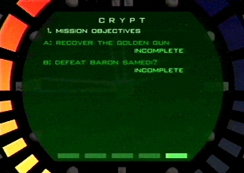

Il existe 2 Photos Beta ou rien n'a changé, mais bon ce sont des Photos Beta alors...


Et un Truc qui a échappé à Rare ! Ils ont changé le Nom du Niveau, qui s'appelait avant "Crypt", en Egyptian. Mais si vous faites Pause, le Nom Crypt est resté ! Voyez par vous-meme !!!

